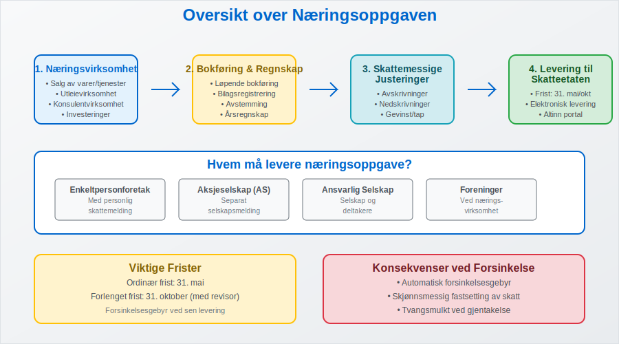
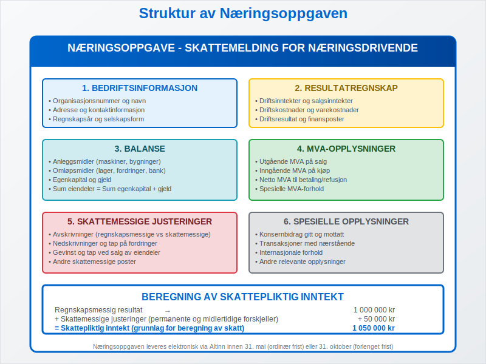
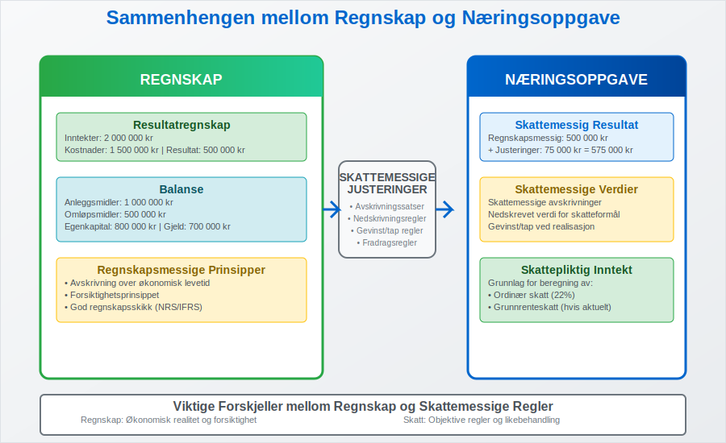

Næringsoppgaven er en sentral del av det norske skattesystemet og representerer den årlige skattemeldingen som alle norske bedrifter må levere til Skatteetaten. Som en viktig komponent i opplysningsplikten, fungerer næringsoppgaven som grunnlaget for beregning av skatt på næringsinntekt og er tett knyttet til bedriftens regnskap og bokføring.
Næringsoppgaven er ikke bare en skattemessig forpliktelse, men også et viktig verktøy for å dokumentere bedriftens økonomiske aktivitet og sikre korrekt skatteberegning. For bedrifter som driver med fakturasalg eller har komplekse driftsinntekter, er næringsoppgaven spesielt viktig for å sikre korrekt rapportering.
For detaljer om Næringsoppgave 1, se Næringsoppgave 1.
Skattefunn-fradrag rapporteres som del av skattemeldingen og næringsoppgaven. Les mer i Skattefunn.

Hvem Må Levere Næringsoppgave?
Alle som driver næringsvirksomhet i Norge har plikt til å levere næringsoppgave, uavhengig av om virksomheten gir overskudd eller underskudd. Dette gjelder for:
Selskapsformer som Må Levere Næringsoppgave
| Selskapsform | Leveringsplikt | Særlige Krav |
|---|---|---|
| Enkeltpersonforetak | Ja | Leveres sammen med personlig skattemelding |
| Aksjeselskap (AS) | Ja | Separat selskapsmelding |
| Ansvarlig selskap | Ja | Både selskap og deltakere |
| Foreninger | Ja, hvis næringsdrift | Kun ved næringsvirksomhet |
Aktiviteter som Utløser Leveringsplikt
- Salg av varer eller tjenester med fortjenesteformål
- Utleievirksomhet utover egen bolig
- Konsulentvirksomhet og frilansarbeid
- Investeringsvirksomhet med aktiv forvaltning
- Landbruk og skogbruk
Selv holdingselskaper som primært forvalter investeringer må levere næringsoppgave dersom de har aktiv forvaltning eller andre næringsinntekter.
Innhold og Struktur i Næringsoppgaven
Næringsoppgaven bygger på bedriftens årsregnskap og inneholder detaljert informasjon om bedriftens økonomiske aktivitet gjennom året.

Hovedseksjoner i Næringsoppgaven
1. Resultatregnskap og Driftsinntekter
Denne seksjonen dokumenterer alle bedriftens inntekter og kostnader:
- Driftsinntekter: Salg av varer og tjenester
- Driftskostnader: Alle kostnader knyttet til drift
- Driftsresultat: Forskjellen mellom inntekter og kostnader
2. Balanse og Eiendeler
- Anleggsmidler: Maskiner, bygninger, immaterielle rettigheter
- Omløpsmidler: Lagerbeholdning, kundefordringer, bankinnskudd
- Egenkapital: Bedriftens nettoverdi
- Gjeld: Leverandørgjeld, lån og andre forpliktelser
3. MVA-opplysninger
For MVA-registrerte bedrifter må næringsoppgaven inneholde:
- Utgående MVA på salg
- Inngående MVA på kjøp
- Netto MVA til betaling eller refusjon
- Spesielle MVA-forhold som fritaksmetoden
Frister og Leveringsrutiner
Leveringsfristen for næringsoppgaven varierer avhengig av selskapsform og regnskapsår:
Leveringsfrister 2024
| Selskapstype | Ordinær frist | Forlenget frist | Betingelser |
|---|---|---|---|
| Enkeltpersonforetak | 31. mai | 31. oktober | Med revisor eller regnskapsfører |
| Aksjeselskap | 31. mai | 31. oktober | Med revisor |
| Ansvarlig selskap | 31. mai | 31. oktober | Med revisor |
Konsekvenser ved Forsinket Levering
- Forsinkelsesgebyr: Automatisk gebyr ved sen levering
- Skjønnsmessig fastsetting: Skatteetaten kan fastsette skatt skjønnsmessig
- Tvangsmulkt: Ved gjentatte forsinkelser
For å unngå forsinkelser er det viktig å ha god internkontroll og systematisk oppfølging av regnskapsarbeidet gjennom året.
Sammenheng Mellom Regnskap og Næringsoppgave
Næringsoppgaven bygger direkte på bedriftens årsregnskap, men inneholder også skattemessige justeringer som kan avvike fra regnskapsmessige prinsipper.

Viktige Forskjeller Mellom Regnskap og Skattemessige Regler
Avskrivninger
- Regnskapsmessige avskrivninger: Basert på avskrivning over økonomisk levetid
- Skattemessige avskrivninger: Følger Skatteetatens satser og regler
- Maksimale avskrivningssatser varierer per aktivatype
Nedskrivninger og Tap
- Nedskrivning av eiendeler: Ulike regler for regnskap og skatt
- Tap på fordringer: Spesielle krav til dokumentasjon for skattemessig fradrag
- Gevinst og tap ved salg: Forskjellig behandling av kapitalgevinst
Praktisk Tilnærming til Regnskapsføring
For å sikre korrekt næringsoppgave er det viktig med:
- Systematisk bokføring gjennom året
- Korrekt kontering av alle transaksjoner
- Regelmessig avstemming av kontoer
- Dokumentasjon av alle bilag
Spesielle Forhold i Næringsoppgaven
Konsernforhold og Konsernbidrag
For bedrifter som er del av et konsern, må næringsoppgaven inneholde opplysninger om:
- Konsernbidrag gitt og mottatt
- Transaksjoner med nærstående selskaper
- Konsolideringsopplysninger for morselskaper
Særlige Bransjer og Aktiviteter
Landbruk og Primærnæringer
- Jordbruksfradrag: Spesielle fradragsregler
- Produksjonstilskudd: Særlig behandling av offentlige tilskudd
- Biologiske eiendeler: Spesiell verdivurdering av husdyr og avlinger
Finansielle Tjenester
- Investeringsselskaper: Spesielle regler for investeringsselskap
- Forsikringsselskaper: Særlige reservekrav og regnskapsregler
- Banker: Spesielle krav til tapsavsetninger
Digitalisering og Fremtidige Utviklinger
Næringsoppgaven blir stadig mer digitalisert, med økt bruk av:
Automatisering og Integrasjon
- API-integrasjon: Direkte overføring fra regnskapssystem
- Automatisk datavalidering: Reduserer feil og mangler
- Sanntidsrapportering: Raskere behandling og tilbakemelding
Nye Rapporteringskrav
- ESG-rapportering: Økt fokus på bærekraft
- CSRD-direktivet: Nye krav til bærekraftsrapportering
- Digitale kvitteringer: Redusert papirbruk og økt effektivitet ved bruk av digitale kvitteringer
Praktiske Tips for Korrekt Næringsoppgave
Forberedelser Gjennom Året
For å sikre en problemfri leveringsprosess:
- Månedlig regnskapsavslutning: Hold regnskapet oppdatert
- Kvartalsvis gjennomgang: Identifiser og korriger feil tidlig
- Dokumentasjon: Oppbevar alle bilag systematisk
- Backup: Sikre regelmessig sikkerhetskopi av regnskapsdata
Vanlige Feil og Hvordan Unngå Dem
Feil i Inntektsføring
- Periodisering: Sikre at inntekter føres i riktig periode
- Fakturasalg: Korrekt behandling av utestående fordringer
- Forskuddsbetalinger: Riktig håndtering av forskuddsbetaling
MVA-relaterte Feil
- Feil MVA-koder: Bruk korrekte koder for ulike transaksjoner
- Periodisering av MVA: Sikre at MVA føres i riktig periode
- Dokumentasjon: Oppbevar alle fakturaer og kvitteringer
Bruk av Profesjonell Hjelp
Mange bedrifter velger å bruke:
- Autoriserte regnskapsførere: For løpende bokføring og regnskap
- Revisorer: For kvalitetssikring og attestering
- Skatterådgivere: For komplekse skattemessige spørsmål
Kontroll og Oppfølging fra Skatteetaten
Skatteetaten har omfattende kontrollmyndighet over næringsoppgaver:
Typer Kontroller
- Automatisk kontroll: Systembasert validering av innsendte data
- Stikkprøvekontroller: Tilfeldig utvalgte bedrifter
- Risikobaserte kontroller: Fokus på høyrisikobedrifter og -bransjer
- Bokettersyn: Detaljert gjennomgang av regnskap og dokumentasjon
Konsekvenser ved Feil
- Tilleggsskatt: Ved forsettlige eller grovt uaktsomme feil
- Renter: På etterbetalt skatt
- Gebyrer: For manglende eller forsinket levering
Konklusjon
Næringsoppgaven er en fundamental del av norsk næringslivs skattemessige forpliktelser og krever systematisk tilnærming og god forståelse av sammenhengen mellom regnskap og skatteregler. Ved å opprettholde god bokføringspraksis gjennom året, sikre korrekt dokumentasjon og holde seg oppdatert på regelverksendringer, kan bedrifter levere korrekte næringsoppgaver til rett tid.
For bedrifter som ønsker å optimalisere sin regnskapsprosess og sikre korrekt næringsoppgave, anbefales det å investere i moderne regnskapssystemer med API-integrasjon og å etablere gode rutiner for løpende regnskapsarbeid og kvalitetskontroll. Næringsoppgaven er en sentral del av det norske skattesystemet og representerer den årlige skattemeldingen som alle norske bedrifter må levere til Skatteetaten. Som en viktig komponent i opplysningsplikten, fungerer næringsoppgaven som grunnlaget for beregning av skatt på næringsinntekt og er tett knyttet til bedriftens regnskap og bokføring.
Næringskode er også påkrevd i næringsoppgaven for å spesifisere bransjetilhørighet, og påvirker hvordan Skatteetaten klassifiserer virksomheten. Se Næringskode.